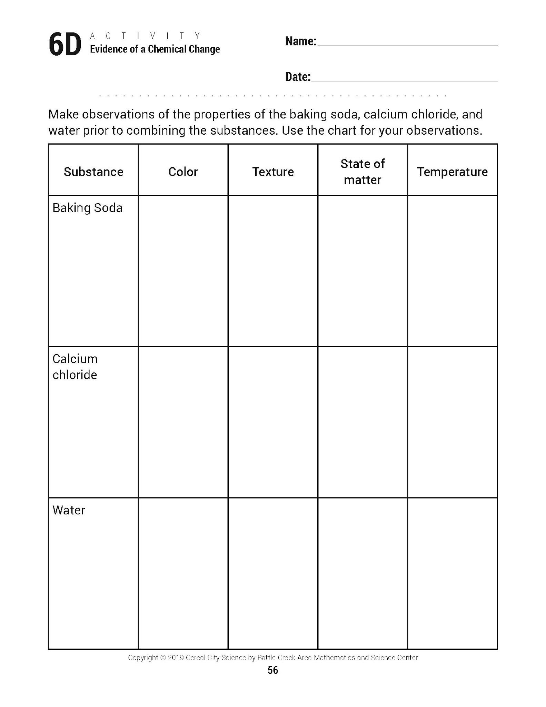
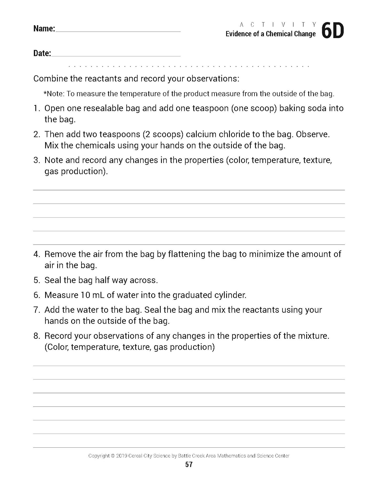
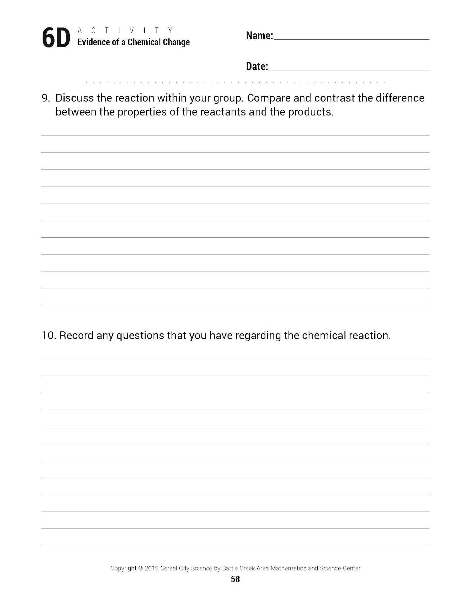
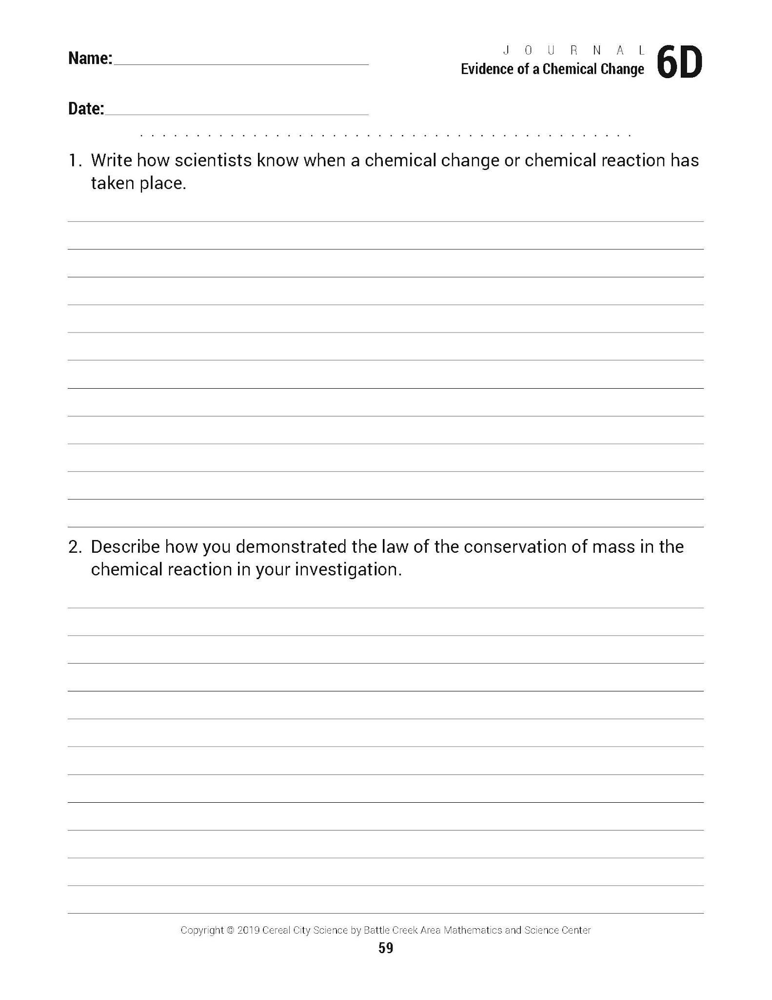

Make observations of the properties of the baking soda, calcium chloride, and water prior to combining the substances. Use the chart for your observations.
| Substance | Color | Texture | State of Matter | Temperature |
|---|---|---|---|---|
| Baking Soda | ||||
| Calcium chloride | ||||
| Water |
Student journal pages 56–59 • Select a page below to read its editable text.
Make observations of the properties of the baking soda, calcium chloride, and water prior to combining the substances. Use the chart for your observations.
| Substance | Color | Texture | State of Matter | Temperature |
|---|---|---|---|---|
| Baking Soda | ||||
| Calcium chloride | ||||
| Water |
This is the unmarked scanned page for checking original diagrams, exact wording, or layout. The editable HTML content is above.

Combine the reactants and record your observations: *Note: To measure the temperature of the product measure from the outside of the bag.
1. Open one resealable bag and add one teaspoon (one scoop) baking soda into the bag.
2. Then add two teaspoons (2 scoops) calcium chloride to the bag. Observe. Mix the chemicals using your hands on the outside of the bag.
3. Note and record any changes in the properties (color, temperature, texture, gas production).
4. Remove the air from the bag by flattening the bag to minimize the amount of air in the bag.
5. Seal the bag half way across.
6. Measure 10 mL of water into the graduated cylinder.
7. Add the water to the bag. Seal the bag and mix the reactants using your hands on the outside of the bag.
8. Record your observations of any changes in the properties of the mixture. (Color, temperature, texture, gas production)
This is the unmarked scanned page for checking original diagrams, exact wording, or layout. The editable HTML content is above.

9. Discuss the reaction within your group. Compare and contrast the difference between the properties of the reactants and the products.
10. Record any questions that you have regarding the chemical reaction.
This is the unmarked scanned page for checking original diagrams, exact wording, or layout. The editable HTML content is above.

1. Write how scientists know when a chemical change or chemical reaction has taken place.
2. Describe how you demonstrated the law of the conservation of mass in the chemical reaction in your investigation.
This is the unmarked scanned page for checking original diagrams, exact wording, or layout. The editable HTML content is above.
